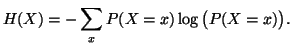
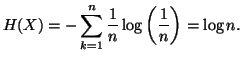
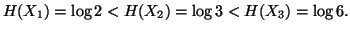
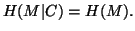
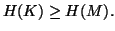

Introduction à la théorie de l'information
C'est une chose que de constater, à force d'exemples, qu'un système de cryptographie est plus sûr qu'un autre. Mais ce serait beaucoup mieux de le prouver "mathématiquement". Mais d'ailleurs, comment mesurer la sécurité apportée par un système de cryptographie? C'est le mathématicien Claude Shannon qui en 1947 a répondu à cette question en développant la théorie de l'information.
Entropie
On considère une épreuve aléatoire, et une variable aléatoire X associée à cette épreuve. Comment mesurer l'information moyenne apportée par la connaissance de X sur l'épreuve aléatoire? Prenons l'exemple suivant : on lance un dé non pipé et on considère les 3 variables aléatoires suivantes :
- X1 qui vaut 0 si le nombre tiré est pair, 1 s'il est impair.
- X2 qui vaut 0 si le nombre tiré est 1 ou 2, 1 si le nombre tiré est 3 ou 4, 2 si le nombre tiré est 5 ou 6.
- X3 qui vaut le nombre tiré.
Définition : Si X est une variable aléatoire discrète, l'entropie de X est définie par :

Dans cette définition, la base du logarithme est souvent choisie égale à 2. L'entropie se mesure alors en shannons, ou en bits (binary information unit).
Il nous faut encore mesurer l'incertitude ou le désordre, liée à l'expérience aléatoire. Si {a1,...,aN} est l'ensemble des issues possibles de l'expérience, l'entropie de l'expérience aléatoire vaut :
- Si X est une variable aléatoire équidistribuée qui peut prendre n valeurs, l'entropie de X est :
 Il est facile de voir que parmi les variables à n valeurs, l'entropie H(X) est maximale lorsque X est équirépartie : une variable aléatoire apporte en moyenne un maximum d'informations lorsqu'elle peut prendre chaque valeur avec une égale probabilité. - Dans l'exemple du dé, on vérifie que :
 Dans cet exemple, l'incertitude totale liée à l'expérience est log 6. - On vous présente 10 cartons sur lesquels sont inscrits sur la face cachée un nombre (tous les nombres sont différents). Vous pouvez poser des questions du type : "Est-ce que le nombre sur ce carton est plus élevé que sur celui-là". Vous payez un franc par question, et vous en recevez 15 lorsque vous savez réordonner les cartons. Acceptez-vous de jouer? Il y a 10! façons d'ordonner les cartons. L'incertitude sur l'ordre dans lequel ils sont rangés vaut donc log(10!)=21,8 shannons environ. Chaque réponse apporte au plus un shannon d'information. Il faudra, du point de vue de la théorie de l'information, 22 questions en moyenne pour reconstituer l'ordre. Il ne faut pas jouer! L'argument précédent est toutefois heuristique. Il ne dit pas en particulier quelles sont les questions à poser pour retrouver l'ordre après 22 questions.
Application à la cryptographie
Shannon a modélisé les systèmes cryptographiques de la façon suivante : le message clair M est défini comme une variable aléatoire à valeurs dans l'ensemble des messages  possibles; le message chiffré C est défini comme une variable aléatoire à valeurs dans l'ensemble des messages chiffrés. M,K et C sont reliés par la relation C=f(K,M), où f est la fonction de chiffrement. L'incertitude liée au système est l'entropie H(M).
Un cryptanalyste doit donc obtenir de l'ordre de H(M) shannons d'information pour retrouver M. A priori, il ne peut connaitre que le système cryptographique utilisé, et C.
possibles; le message chiffré C est défini comme une variable aléatoire à valeurs dans l'ensemble des messages chiffrés. M,K et C sont reliés par la relation C=f(K,M), où f est la fonction de chiffrement. L'incertitude liée au système est l'entropie H(M).
Un cryptanalyste doit donc obtenir de l'ordre de H(M) shannons d'information pour retrouver M. A priori, il ne peut connaitre que le système cryptographique utilisé, et C.
Définition : Un système cryptographique est dit parfait si :

Autrement dit, le système cryptographique est parfait si la connaissance du message chiffré n'apporte aucune information sur le message clair.
Ex : le chiffre de Vernam.
On veut chiffrer une phrase de m lettres avec le chiffre de Vernam. L'ensemble des messages possibles a donc pour cardinal n=26m, tout comme l'ensemble des clés possibles et des chiffrés possibles. Toutes les clés sont possibles avec une même probabilité. On a donc :

Théorème : Si un système cryptographique est parfait, alors :

En d'autres termes, l'information contenue dans la clé (sa taille) est au moins aussi grande que l'information contenue dans le message en clair : il ne sert à rien de vouloir inventer un système de cryptographie dont la clé serait moins longue que le message à envoyer et qui serait aussi sûr que le chiffre de Vernam. La théorie de Shannon prouve que cela est impossible.
Preuve du théorème : D'après les propriétés de l'entropie conditionnelle, pour n'importe quel système cryptographique :
Consulter aussi